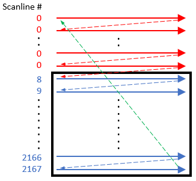
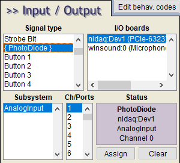
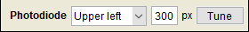
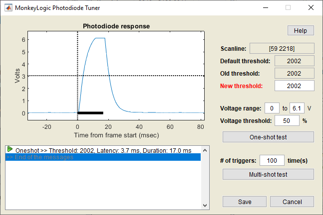
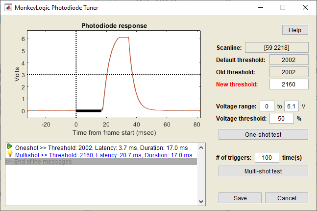
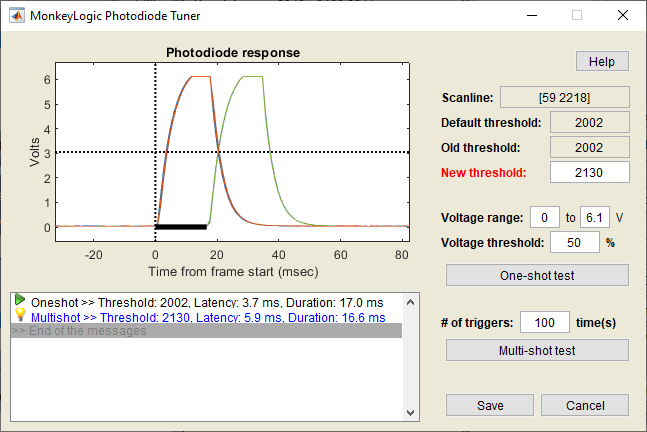
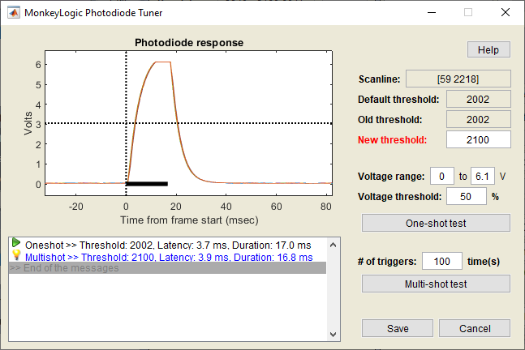

The National Institute of Mental Health (NIMH) is part of the National Institutes of Health (NIH), a component of the U.S. Department of Health and Human Services.
This tool tests the response characteristics of a monitor connected to NIMH ML and adjusts the timing of screen flips so that stimuli can be presented immediately during the next frame. Try this tool, if you have a large monitor, like 4K, or the result of the latency test does not look normal.
A frame is drawn by rasters scanning the screen (or scanlines; blue arrows in the figure below) from top left to bottom right. Some scanlines are not shown on the screen but used to fill in the vertical blank time (VBLANK; red arrows) between frames. It is a very common technique to replace screen contents during VBLANK, so that graphics may not be split into two frames. (Failure to avoid splits causes "tearing".) To use this technique, a memory buffer for new screen contents should be submitted sufficiently early before VBLANK occurs (green arrow). If the submission time is late and too close to VBLANK, the contents may be delayed and displayed one frame later.

However, it does not necessarily mean that earlier buffer submission is always better. After the buffer submission, NIMH ML has to wait until the first scanline (scanline 8 in the above figure) begins, to record the exact time of the new frame. This waiting takes away time for graphics and data processing. Therefore, we measure the optimal timing for buffer sumission to maximize the performance of NIMH ML.
To use the PD tuner, connect the PD input to a DAQ analog input channel and assign the channel to "PhotoDiode" on the I/O menu.

Then choose a screen location for the PD trigger (a white square) in the Video menu as shown below.

Note: 1. The scanlines are always drawn from the upper left corner of the monitor and the eventcode for a new frame is recorded when the first scanline begins. If the location of the PD is not upper left, there will be a time difference between the eventmarker and the PD response. 2. A flipped screen can also introduce such a time difference between the eventmarker and the PD response, because flippinig the screen in the Windows display settings changes the location of the PD trigger but the directon of scanlines stays the same.
Click the activated [Tune] button and the tuner window will pop up.

The results shown here are examples tested with a 3840x2160 monitor at 60 Hz. Each system is likely to have a different scanline range and a different threshold number.
In the figure below, the new threshold was set to 2160, which was closer to the last scanline (=2218), compared to the previous threshold (=2002). This number was too close to VBLANK so the PD trigger was pushed back by another frame, as shown by the estimated latencies (17.0 ms) and voltage traces in the figure below. Note that the peaks occurred outside the black bar. Therefore, the value of 2160 would be a poor choice.

When the threshold was set to 2130, the PD trigger was presented in the frame drawn immediately after buffer submission, but sometimes it was delayed by another frame. This value would still not be a safe threshold.

With a threshold value of 2100, the PD trigger was presented in the immediate next frame every single time. This new threshold can be safely used. Click the [Save] button to keep the new threshold value.

The National Institute of Mental Health (NIMH) is part of the National Institutes of Health (NIH), a component of the U.S. Department of Health and Human Services.